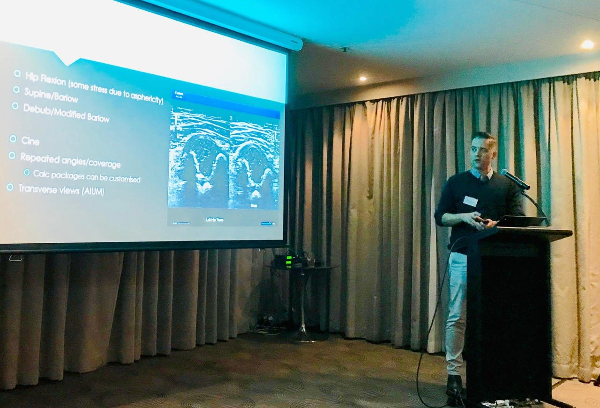

Teaching and academia
Teaching, academic work and mentorship.
Much of my work is about the people doing the scanning: postgraduate teaching, academic research, and supporting colleagues who are writing for publication for the first time. Education for sonographers, including at regional sites, has its own page.
Teaching
Since 2019 I have been a sessional lecturer in paediatric ultrasound in an ASAR accredited postgraduate medical ultrasound course, and contribute to work-integrated learning and clinical supervision research.

Mentorship
First-time authors supported to publish
Eight peer-reviewed papers led by first-time and early-career authors whom I was able to mentor. Some have gone on to careers in business, medicine and pharmacy, taking a little paediatric medical imaging context with them.
| First author | Paper | Journal and year | Link |
|---|---|---|---|
| Tattersall | Evaluating the diagnostic utility of spinal ultrasound in neonates with a simple sacral dimple: an eight-year retrospective study | J Med Radiat Sci, 2025 | DOI |
| Perkins | Diagnostic accuracy of ureteric jet angle and location in children with vesicoureteric reflux: a retrospective study | Sonography, 2025 | DOI |
| Sungkana | A clinical audit of the utility of abdominal ultrasonography in the diagnosis of fungal infections in febrile neutropaenic paediatric oncology patients | Radiography, 2025 | DOI |
| Sungkana | The utility of abdominal ultrasonography in the diagnosis of fungal infections in children: a narrative review | J Med Radiat Sci, 2021 | DOI |
| Gemmell | Diagnostic accuracy of ureteric jet angle measurement using colour Doppler ultrasonography in children with vesico-ureteric reflux: a systematic review | J Ultrasound Med, 2024 | DOI |
| Cleary | Benchmarking non-attendance patterns in paediatric medical imaging: a retrospective cohort study spotlighting First Nations children | Radiography, 2024 | DOI |
| Johnson | A review of sonographic thyroid volume and iodine sufficiency in children: an Australian perspective | Australas J Ultrasound Med, 2020 | DOI |
| Burnett | An audit of referral time frames for ultrasound screening of developmental hip dysplasia in neonates with a normal antenatal clinical examination | Sonography, 2018 | DOI |